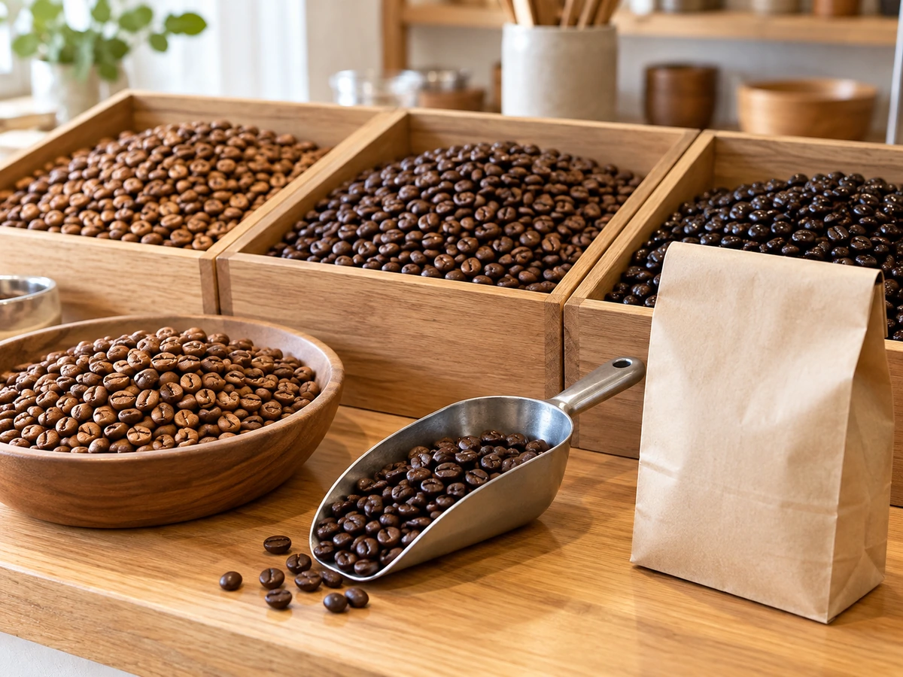

CONCEPT
いちばん上の豆を、
いちばん身近な場所で
BOXCOFFEE泉店は、秋田市泉のスーパー、グランマート泉店の中にあるコーヒースタンドです。 豆はスペシャルティコーヒー。いつもの買い物の途中に、量り売りの豆や一杯のコーヒーを選べます。 男鹿のアメヤ珈琲のグループのお店です。
10 Straight × 5 Blend
ストレートコーヒーが10種類、オリジナルブレンドが5種類。毎月替わる「マンスリー珈琲」もあります。ドリップパックや、家で手軽に飲めるリキッドの商品も並びます。
来店された方は、こう書かれていました。
甘すぎない珈琲ソフトが絶品です。 公開されている来店者の感想より
本格的な豆も、気軽なおやつも、買い物のついでに楽しめるお店です。
